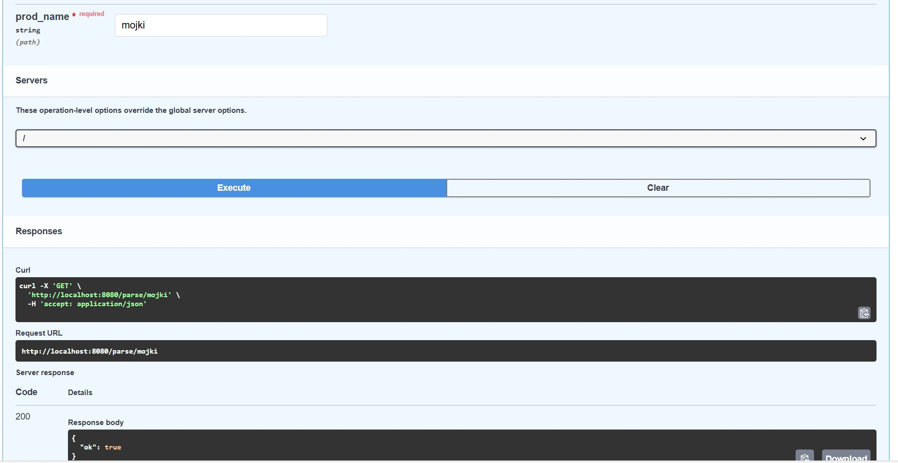
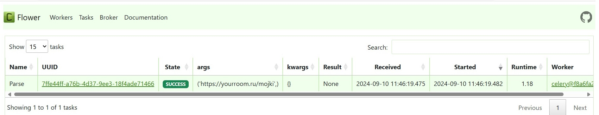

Лабораторная работа №3
В результате выполнения этой работы был создан асинхронный парсер, который вызывался по определенному запросу через Fast-Api приложение. После чего с помощью Celery и Redis был настроен вызов данного парсера через очередь.
Код docker-compose.yml
version: "3.9"
services:
db:
image: postgres:15
container_name: db_10
command: -p 1221
expose:
- 1221
env_file:
- .env
redis:
image: redis:7
container_name: redis_10
command: --port 5370
expose:
- 5370
app:
build:
context: .
env_file:
- .env
container_name: api_10
depends_on:
- db
- redis
ports:
- 8080:8080
celery:
build:
context: .
container_name: celery_10
env_file:
- .env
command: ["/lab3/docker/celery.sh"]
depends_on:
- app
- redis
- db
Код Dockerfile
FROM python:3.11
WORKDIR /lab3
COPY requirements.txt .
RUN pip3 install -r requirements.txt
COPY . .
RUN chmod a+x docker/*.sh
CMD gunicorn main:app --worker-class uvicorn.workers.UvicornWorker --bind 0.0.0.0:8080
Код эндпоинта
@app.get("/parse/{page_num}")
async def parse_radio(page_num: int):
parse_flat.delay(f'https://get-balance.ru/flats/?data%5BPAGE%5D%5Bname%5D=PAGE&data%5BPAGE%5D%5Bvalue%5D={page_num}')
return {"ok": True}
Код worker.py
import asyncio
from sqlalchemy.dialects.postgresql import asyncpg
from config import *
from celery import Celery
from sqlalchemy import create_engine
from sqlalchemy.orm import sessionmaker
from flat_parse import parse_and_save
broker = f'redis://{REDIS_HOST}:{REDIS_PORT}'
worker = Celery('tasks', broker=broker)
DATABASE_URL = f"postgresql://{DB_USER}:{DB_PASS}@{DB_HOST}:{DB_PORT}/{DB_NAME}"
engine = create_engine(DATABASE_URL)
Session = sessionmaker(bind=engine)
db_session = Session()
@worker.task(name='Parse')
def parse_flat(url: str):
asyncio.run(parse_and_save(url, DATABASE_URL))
Результат
 